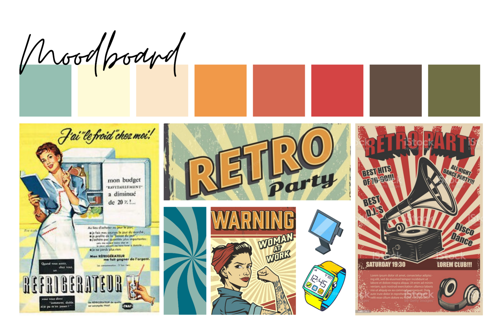

Squad'Quest
Dans le cadre de ma première année de Master Cultures Numériques, j'ai pu réaliser un projet qui avait pour but d’analyser une activité de collaboration, une situation d’activité. Nous devions, dans un premier temps, filmer et prendre en note les éléments de collaboration, pour réaliser une ou plusieurs auto-confrontations avec les personnes observées, afin de confronter un point de vue externe et interne. L’objectif final est de concevoir un dispositif collaboratif pour le lieu étudié, tout en adoptant une démarche critique. Notre lieu d’observation est le bar Le Louis Blanc, situé sur l’île de Nantes.
Ce projet s’est déroulé en 2 phases :
- La première phase s’articulait autour de l'observation et l'analyse de la situation de collaboration.
- La deuxième phase consistait à la réalisation du dispositif numérique qui s'inscrit dans cette situation afin de l'améliorer.
I - La phase d'analyse
II - Notre solution numérique
1. Remise en contexte
Lors de la première phase, nous avons soulevé plusieurs points :
- Nos observations, auto-confrontations et analyses nous ont permis de remarquer une
communication implicite entre les collaborateurs du Louis Blanc, qui est selon l’une des collaboratrice, la responsable, très ancrée dans leur travail et qu’elle considère presque comme indispensable dans leur collaboration. Nous relevons alors une attente des collaborateurs, pour tout nouvel employé, à acquérir cette compétence et cette anticipation des besoins des autres sans communiquer verbalement.
- Nous noterons ensuite ce que les employés appellent “une danse”, qui permet aux collaborateurs de travailler dans un espace réduit, qui nécessite une bonne connaissance de l’autre mais également une bonne collaboration et une anticipation des gestes de l’autre donc également une attente entre collaborateurs.
- Enfin, le bar soutient fermement ses valeurs d’esprit de famille entre collaborateurs et avec les clients. Ici encore, on notera une certaine attente envers les collaborateurs, notamment à porter les valeurs du bar.
Ainsi, suite à ces trois points, nous avons réussi à dégager une problématique : la difficulté pour les nouveaux employés à s’intégrer à cette dynamique et à répondre à toutes ces attentes, implicites et pourtant importantes dans la collaboration des employés du bar.
C’est en effet un sujet récurrent que l’on peut retrouver dans de nombreux bars ou restaurants. L’activité souligne une étroite collaboration, et il faut, pour cela, être capable d’intégrer un nouvel arrivant rapidement.
Notre question serait donc la suivante :
Quel type de dispositif pourrait permettre une promesse d’apprentissage facile et rapide, pour les nouveaux arrivants, de la dynamique du Louis Blanc, ainsi que dans d’autres bars ?
2. Notre solution
Approche pour la solution
Afin de répondre à cette problématique, nous avons imaginé une solution de scorification de
la collaboration entre collègues.
Notre dispositif est composé de plusieurs éléments : des montres connectées, un tableau de
bord et des caméras et capteurs installés dans le bar.
Le principe est simple : chacun des membres de l’équipe est équipé d’une montre qui lui donne son score de collaboration en temps réel. Ce score est calculé grâce aux informations recueillies par les capteurs et caméras installés dans le bar, sur des tâches définies automatiquement et/ou manuellement. Les tâches et les scores de tout le monde sont consultables sur le tableau de bord mis à la disposition de tous au milieu du bar.
Plus des membres sont nombreux à réaliser une tâche, plus ils gagnent de points. L’employé qui a obtenu le plus de points à la fin de la journée pourra se voir accorder des privilèges (ex : le droit de terminer quelque minute plus tôt le soir, recevoir une part plus importante des pourboires, etc).
Le but est donc de gagner un maximum de points qui ne sont atteignables que si les membres réalisent des tâches ensemble : collaborer pour mieux atteindre ses objectifs.
Cette gamification des tâches permet d’intégrer les nouveaux arrivants en les joignant à la partie : les tâches étant leurs repères des actions à effectuer et le mouvement des autres joueurs donnent le ton du rythme à suivre. Ce système apparaît donc comme la promesse d’une intégration rapide et facile au sein de l’équipe, tout en ayant un aspect ludique.
Mais cette solution permet également d’encourager la collaboration entre les membres et de renforcer la productivité : on peut améliorer les points faibles et mettre à bon escient les points forts de chacun pour tenter d’effectuer le plus de missions possibles ensemble et de gagner des points.
Geste critique
Même si cette solution encourage, au premier abord, la collaboration en adoptant une
dimension de gamification des tâches, certains aspects présentent des enjeux de design critique.
En effet, le fait d’attribuer un score de collaboration présente des limites : pousser à la productivité en partageant les tâches revient à une division du travail. Ainsi, les individus pourraient être amenés à devenir non plus seulement des collaborateurs mais de simples spécialistes d’une tâche au sein d’une chaîne de production où la dimension et le sens global donné à celle-ci serait minimisé (de la même façon que le travail à la chaîne).
On pourrait donc être amené à se poser des questions sur les conditions de travail et sur l’aliénation des comportements toujours à la quête de points.
Ce système de score pose également la question d’une évaluation du travail. Attribuer des points pour inciter à l’esprit de collaboration pourrait également pervertir la promesse initiale de l’apprentissage facile en ayant une connotation de mesure de la qualité du travail fourni. Ainsi, avoir beaucoup de points serait gage de bon travail et un nouvel arrivant qui aimerait faire ses preuves se confronte immédiatement à l’évaluation de ce qu’il effectue alors même qu’il entre dans une partie dont il ne connaît pas encore bien le rythme.
Si l’on pousse davantage cette idée et que l’on part du principe qu’obtenir de bons score en contrepartie de privilèges qui apparaissent comme des récompense, le revers de la médaille est qu’une personne, et notamment un nouvel arrivant qui arrive en cours de partie et n’ayant pas encore accès à ses privilèges se voit donc désavantagés : ce qui pousse réellement les membres à collaborer pour obtenir un bon score n’est pas tant le fait d’avoir un résultat élevé ou même une récompense mais plutôt le fait de ne pas avoir de récompense qui serait un désavantage. Prenons exemple du privilège « le droit de terminer 10 minutes plus tôt » : cela sous-entend que les personnes qui resteront jusqu’à leurs horaires convenus devront réaliser les tâches que la personne qui est partie plus tôt devait faire, et donc travailler plus.
Toute la dimension gamification, esprit d’équipe et de collaboration prend alors une autre tournure lorsque l’on comprend que les réelles motivations des travailleurs sont justement d’éviter de faire le travail de l’autre. Ce n’est plus un jeu mais une course à la tâche pour ne pas en faire encore plus.
Enfin, il est difficile de penser une telle solution sans réfléchir à l’algorithme qui tourne dernière ce dispositif : quels biais présente-il ? Est-il adapté à toutes les personnes (y compris celles en situation de handicap) ? Tous les algorithmes présentent des biais et laisser des machines évaluer les performances amène à se poser des questions.
Pour que ces algorithmes fonctionnent, il faut qu’il y ait des entrées. Ces entrées ne sont autre que les données fournies par les capteurs installés au sein du bar : chaque membre est constamment traqué afin que ces calculs puissent se faire. Autrement dit, même si les caméras ne filment que les tables et que les capteurs détectent ce que fait une personne en fonction de ce qu’elle touche, s’il n’y a pas de traçage à proprement parler c’est l’accumulation de ces données qui font que l’algorithme fonctionne et, par extension, font que le responsable du bar notamment est capable de tout savoir sur ses employés. En d’autre termes, le tableau de bord qui résume toutes ces données sous formes de “tâches à faire”, “tâches en cours”, “scores”, permettent à tout le monde (et au responsable) de savoir qui fait quoi, où et quand. Cette dimension est sujette à critique, notamment pour les questions de liberté de mouvement face à cette situation qui frôle ce que l’on pourrait presque qualifier de surveillance massive.
Cas d'usages
Titre : SQUAD’QUEST
Acteurs :
- Les nouveaux arrivants dans l'équipe
- Les membres de l'équipe existante
- Le responsable du bar
Description :
- Un nouveau membre rejoint l'équipe dans le bar et est
équipé d'une montre connectée au système de
collaboration en temps réel.
- Les caméras et les capteurs installés dans le bar
enregistrent les activités des membres de l'équipe à
chaque table.
- Le système calcule les scores de collaboration pour
chaque membre de l'équipe en fonction de leur
participation à des tâches collaboratives.
- Le grand tableau de bord situé au milieu du bar affiche
en temps réel les tâches à effectuer, qui fait quoi en ce
moment et le score de chacun.
- Le nouveau membre peut consulter le tableau de bord
pour connaître les tâches en cours et les personnes qui y
participent.
- Les tâches peuvent être ajoutées de manière
automatique en fonction des données recueillies par les
capteurs sur l’activité au sein bar, ou peuvent être
ajoutée manuellement soit par les membres eux mêmes lorsqu’ils initient une nouvelle commande sur la caisse, soit par le responsable du bar qui peut en ajouter à tout moment de la journée.
- Le système encourage les membres de l'équipe à collaborer en leur offrant des points de collaboration pour chaque tâche accomplie en groupe.
- Si un membre de l'équipe effectue une tâche seul, il ne gagne que peu de points de collaboration.
- Le responsable du bar peut utiliser le tableau de bord pour surveiller l'activité des membres de l'équipe et encourager la collaboration si nécessaire.
Le système de scorification en temps réel encourage les membres de l'équipe à travailler ensemble et à collaborer pour gagner des points de collaboration. Les nouveaux arrivants dans l'équipe peuvent rapidement s'intégrer et participer aux tâches en cours grâce au tableau de bord. Les membres de l'équipe existante peuvent également être encouragés à travailler plus efficacement ensemble pour atteindre des objectifs communs.
Scénarios d'usages
Si jusqu’ici les membres du bar effectuaient un partage des tâches de manière naturelle avec une forme de langage quasiment gestuelle et implicite sans avoir à prononcer de mots, notre solution s’intègre dans ce contexte : les collaborateurs n’ont pas besoin de se parler pour se répartir
les tâches, les machines le font pour eux. Grâce au tableau de bord, chacun pourra savoir qui fait quoi à quel moment, ce qu’il reste à faire et où chacun en est. C’est ce tableau de bord qui servira de liaison entre tous les membres puisqu'il sert finalement d’artefact de leur activité.
Situation de collaboration actuelle :
Nous voyons donc que si actuellement, un nouveau collaborateur au sein du bar aurait du mal à s’intégrer dans la dynamique du groupe car il ne connaît pas les repères et les codes gestuels et de langage des membres de l’équipe ...
Situation de collaboration avec notre solution :
... Notre solution permettrait de servir d’appui pour tout le monde, y compris le nouvel arrivant, en affichant explicitement ce qui n’est pas exprimé explicitement actuellement. Concrètement, dans le premier scénario un membre de l’équipe regarde le tableau de bord sur lequel il peut voir que sa collègue est en train de débarrasser une table. Il décide alors de la rejoindre pour gagner des points de collaboration (dont elle aussi bénéficiera). Dans le deuxième scénario, nous voyons que dès lors que les capteurs détectent qu’il n’y a plus de client sur une table par exemple, cette information est directement transmise au tableau de bord qui affiche donc une nouvelle tâche à effectuer.
En clair, notre dispositif encourage à la fois la collaboration en permettant à chacun de gagner plus de points s’ils travaillent ensemble, mais aussi de permettre à tous, y compris les nouveaux, de comprendre ce qu’est la dynamique du bar en temps réel et pouvoir se joindre facilement à la partie sans devoir demander une explicitation verbale et déranger / casser le mouvement des autres.
Discussion de droit
Notre système de collaboration Squad’Quest soulève plusieurs questions sur la juridiction que nous avons tâché de résoudre. En voici un court résumé :
- Les caméras, disposées en intérieur et en extérieur du bar, permettent d’analyser les images via un algorithme pour définir des tâches. Ces caméras doivent avoir une finalité claire : la vidéosurveillance et la vidéoprotection, afin de traiter les images à l’instant T. La durée de conservation n’excède pas les 24h. Pour la protection des données personnelles, nous soulignons le fait qu’aucun visage n’est filmé, client comme collaborateur, et qu’aucune caméra n’est disposée dans un endroit privé : vestiaires, toilettes ou cuisine.
- Les montres, qui agissent, en termes de législation, comme de simples badgeuses. Bien qu’elles proposent des informations supplémentaires pour le salarié, la seule information légale qu’elles transmettent sont l’heure de prise de poste et l’heure de fin de service, par le démarrage du dispositif et son éteignage. Les données sont ensuite conservées dans un dossier pour une durée limitée.
- La scorification n’est pas réglementée par la loi en elle-même. Si mal utilisée, elle peut engendrer une pression morale sur l’employé. Le point à souligner consiste à la bonification des collaborateurs lors d’un score très positif. Nous proposons une répartition équitable des pourboires en fin de journée, selon le score. Si les employés donnent leur accord, il est possible de considérer comme “équitable” une répartition liée à la scorification.
3. Notre affiche
Moodboard
Choix de médiation
Dans le cadre de la création d'une solution numérique pour aider les employés de bar à s'intégrer plus facilement, nous avons décidé de créer une affiche pour présenter cette solution aux patrons de bar. L'affiche est un moyen de communication visuelle efficace pour présenter la solution de manière claire et attrayante.
L'affiche est un support visuel qui permet de transmettre rapidement des informations. Elle peut être facilement affichée dans les lieux de travail et peut être vue par un grand nombre de personnes en même temps. En outre, elle permet de présenter des informations de manière concise et facile à comprendre, ce qui est particulièrement important lorsqu'on présente une solution numérique complexe.
Une affiche peut également s’intégrer dans un bar, nous avons donc voulu créer un sentiment de rétro et de vintage, en utilisant des couleurs chaudes et des typographies rétro qui rappellent l'ambiance des bars des années 60 ou de certains bars actuellement avec un sentiment de familiarité et de convivialité.
Choix graphiques
Notre choix de graphisme pour cette affiche est motivé par notre volonté de rappeler l’ambiance rétro et vintage des bars, tout en présentant les informations de manière claire et facile à comprendre. Nous avons donc utilisé des couleurs chaudes comme le rouge, l'orange et le jaune, qui rappellent l'ambiance des bars des années 60 et des affiches publicitaires des années 60. Nous avons donc établi un moodboard dans ce sens là.
Nous avons choisi des typographies rétro, qui sont facilement identifiables et qui renforcent l'aspect vintage de l'affiche. La typographie utilisée pour le titre est une typographie sans-serif, claire et lisible et la typographie est de type manuscrite, qui donne un sentiment d'authenticité.
Nous avons également ajouté des illustrations de personnages de bar, qui sont représentés en train d'utiliser la solution numérique proposée et qui semblent apprécier cette solution. Les illustrations créent un sentiment d'empathie et de connivence avec les employés, renforcent la confiance et l'acceptation de la solution proposée, et aident à convaincre les patrons de bar de son utilité.
Enfin, nous avons inclus des images de la solution numérique elle-même, montrant les différents éléments tels que la montre et le tableau de bord. Les images aident à visualiser la solution proposée et montrent comment elle peut être utilisée pour aider les employés de bar à s'intégrer plus facilement.
En conclusion, notre choix de graphisme pour cette affiche est motivé par notre volonté de remettre les codes et les ambiances des bars, tout en présentant les informations de manière claire et facile à comprendre. Les couleurs chaudes et les typographies rétro créent un sentiment de familiarité et de convivialité, tandis que les illustrations de personnages de bar aident à convaincre les patrons de bar de l'importance d'investir dans cette solution numérique.